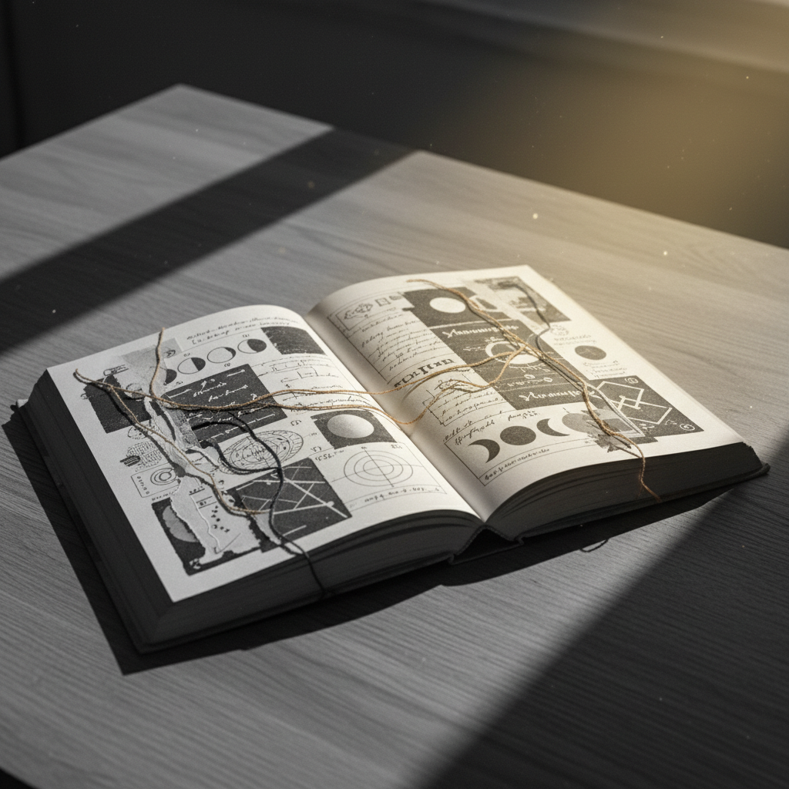

THE GREAT
LIBRARY
A curated repository of ancient wisdom and modern inquiry, preserved for the silent observers of the digital age.

Featured Collections
View Archive Directory
26-Workbook Series
The Lunar Chaperone
A ritualistic journey through twenty-six celestial transitions. Full Moon to New Moon and beyond.
Browse all 26 workbooksSpecial Threshold
Eclipse Portals
Two rare threshold workbooks for non-linear practitioners during celestial alignment.
Enter Eclipse PortalEnter Anywhere
Your Current Cycle
Time is now. If you arrive at Workbook 15, let 15 be your first. The cycle begins where you begin.
Find your workbook →
format_quote
"Information is but a vessel; truth is the water that shapes its container."
The Curator — Preface to Vol. I